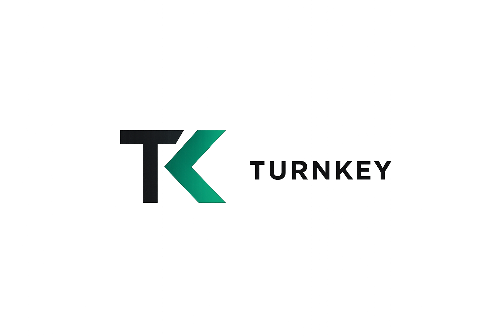

March revenue
$22.1k
Down 76.2% from February's $93.0k. YTD revenue sits at $115.1k.

March was the weakest month of the quarter and pulled year-to-date performance sharply lower. Revenue slowed to $22.1k while project labor and materials remained elevated, driving a steep gross loss and making collections the most important near-term operating priority.
| Month | Revenue | Gross profit | Net income |
|---|---|---|---|
| January | $0.0k | ($53.5k) | ($67.7k) |
| February | $93.0k | $20.7k | $11.8k |
| March | $22.1k | ($61.7k) | ($85.4k) |
| YTD | $115.1k | ($94.6k) | ($141.4k) |
| Line item | March | % of revenue |
|---|---|---|
| Labor COGS | $54.8k | 247.8% |
| Materials COGS | $28.7k | 129.7% |
| Total COGS | $83.9k | 379.2% |
| Operating expenses | $21.8k | 98.4% |
| Other expenses | $1.9k | 8.7% |
| Bucket | Amount | % of A/R |
|---|---|---|
| 61-90 days | $7.9k | 5.7% |
| 91+ days | $131.2k | 94.3% |
| Total A/R | $139.2k | 100.0% |
| Customer | Amount | Bucket |
|---|---|---|
| Terrence Ruffin | $94.7k | 91+ |
| John O'Malley | $25.9k | 91+ |
| Anita Gaskins | $12.8k | 91+ |
| Pinkney | $7.9k | 61-90 |
| Total A/P | $2.5k | 31-60 |
1. March job economics were upside down
Revenue fell to $22.1k while direct labor alone was $54.8k and materials added another $28.7k. That produced a gross loss of $61.7k before overhead, which means margin discipline on active work needs immediate review.
2. Overhead is not the main story, but it still adds drag
March operating expenses were $21.8k. The biggest items were uncategorized expense at $10.8k, accounting fees at $3.3k, and software and design tools at $1.7k combined. Clean classification will matter when separating recurring overhead from one-time cleanup or catch-up items.
3. A/R concentration is the clearest cash lever
Total receivables sit at $139.2k, and 94.3% is already 91+ days old. Collections on a small number of older balances would likely do more for liquidity in the next 30 days than incremental cost cutting alone.
4. Cash survived the quarter, but not because the core engine was healthy
Cash closed at $44.0k, yet operating cash flow was still negative and financing activity absorbed more cash than it contributed net. The business needs better conversion from completed work into billed and collected cash.